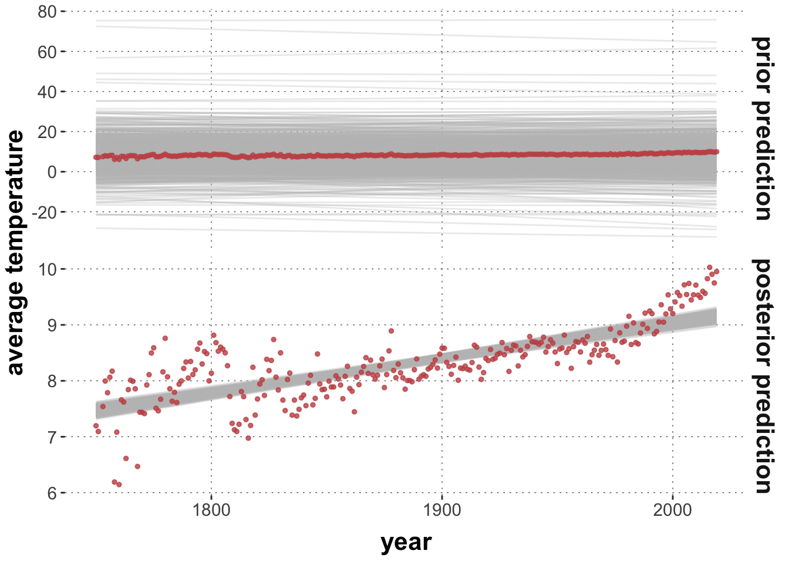
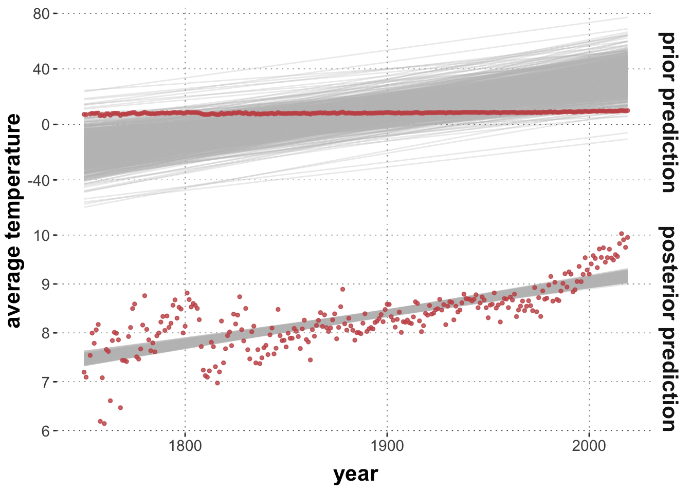
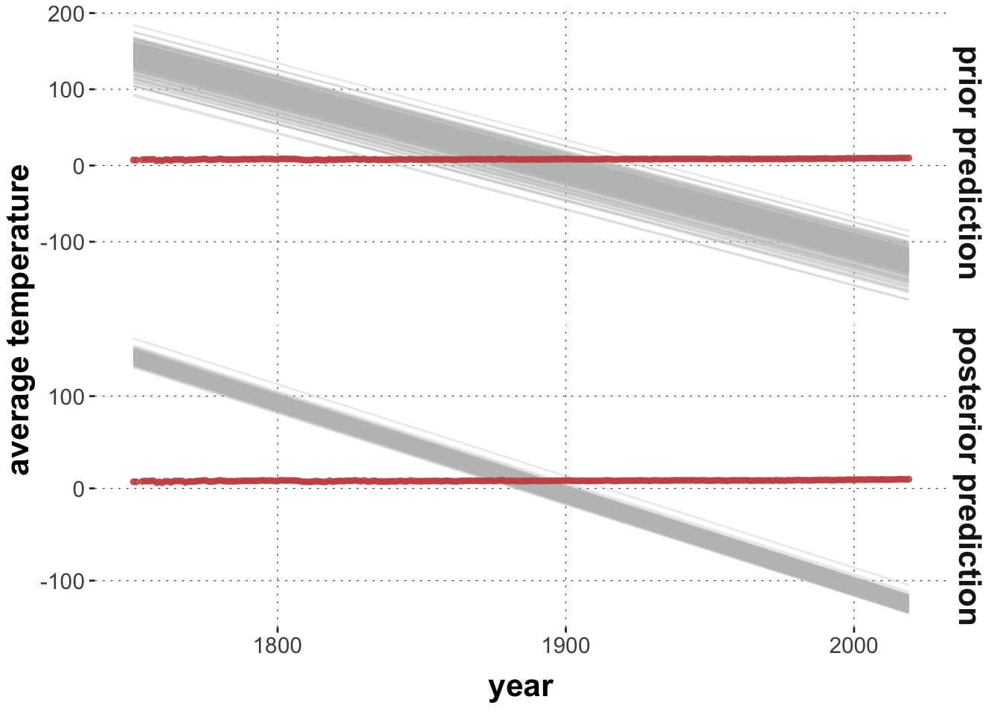
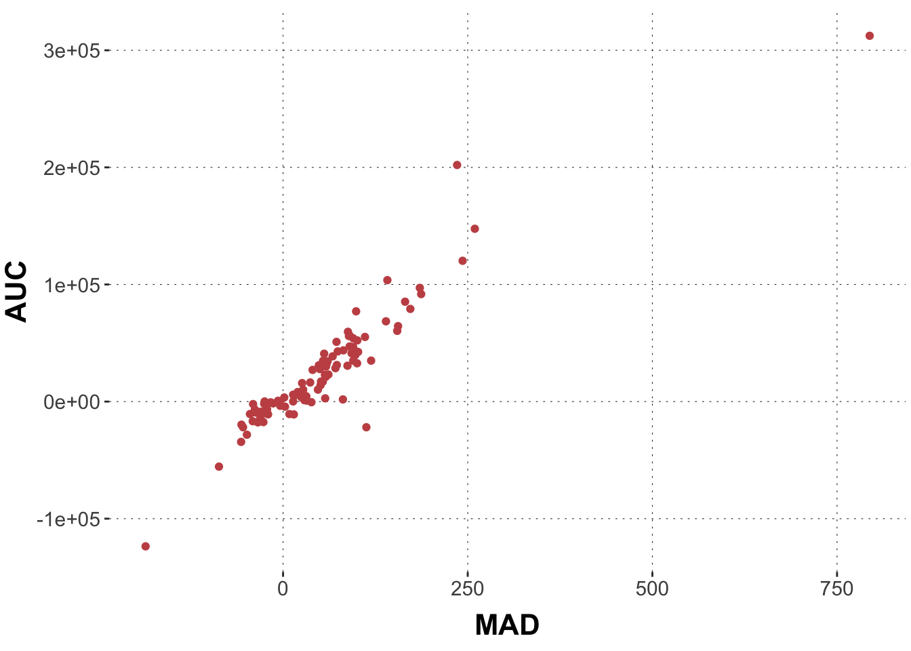

This tutorial covers how to inspect and set priors in Bayesian regression models with brms. The choice of prior should be informed by their effect on the prior predictive distribution. The tutorial therefore also covers how to collect samples from the prior, and the prior and posterior predictive distributions.
Preamble
Here is code to load (and if necessary, install) required packages, and to set some global options (for plotting and efficient fitting of Bayesian models).
Toggle code
# install packages from CRAN (unless installed)pckgs_needed <-c("tidyverse","brms","rstan","rstanarm","remotes","tidybayes","bridgesampling","shinystan","mgcv")pckgs_installed <-installed.packages()[,"Package"]pckgs_2_install <- pckgs_needed[!(pckgs_needed %in% pckgs_installed)]if(length(pckgs_2_install)) {install.packages(pckgs_2_install)} # install additional packages from GitHub (unless installed)if (!"aida"%in% pckgs_installed) { remotes::install_github("michael-franke/aida-package")}if (!"faintr"%in% pckgs_installed) { remotes::install_github("michael-franke/faintr")}if (!"cspplot"%in% pckgs_installed) { remotes::install_github("CogSciPrag/cspplot")}# load the required packagesx <-lapply(pckgs_needed, library, character.only =TRUE)library(aida)library(faintr)library(cspplot)# these options help Stan run fasteroptions(mc.cores = parallel::detectCores())# use the CSP-theme for plottingtheme_set(theme_csp())# global color scheme from CSPproject_colors = cspplot::list_colors() |>pull(hex)# names(project_colors) <- cspplot::list_colors() |> pull(name)# setting theme colors globallyscale_colour_discrete <-function(...) {scale_colour_manual(..., values = project_colors)}scale_fill_discrete <-function(...) {scale_fill_manual(..., values = project_colors)}
Priors in brms models
Preparing the running example
We work with the mouse-tracking data from the aida package. As a running example, we look at the linear relation between (aggregates of) area-under-the-curve AUC and MAD. Here is the relevant data plot:
Toggle code
# catchy name for the datadolphin <- aida::data_MT# create aggregate datadolphin_agg <- dolphin |>filter(correct ==1) |>group_by(subject_id) |> dplyr::summarize(AUC =median(AUC, na.rm =TRUE),MAD =median(MAD, na.rm =TRUE))dolphin_agg |>ggplot(aes(x = MAD, y = AUC)) +geom_point(size =3, alpha =0.3)
Toggle code
# run the modelmodel1 =brm( AUC ~ MAD, data = dolphin_agg)
Inspecting and changing priors
We can inspect the priors used in in a model fit like so:
Toggle code
brms::prior_summary(model1)
prior class coef group resp dpar nlpar lb ub
student_t(3, 14864.2, 32772.3) Intercept
(flat) b
(flat) b MAD
student_t(3, 0, 32772.3) sigma 0
source
default
default
(vectorized)
default
The table gives information about the kind of prior used for different parameters. Parameters are classified into different classes (column “class”). The “b” class contains the slope coeffiecients. Here, we only have one slope (for MAD), which is identified in the “coef” column. For more complex models, the other colums may be important (e.g., identifying groups in multi-level models, for parameters in distributional and non-linear models, as well as lower and upper bounded paramters).
This particular output tells us that the priors for the slope coefficient for the variable MAD was “flat”. Per default, brms uses so-called improper priors for slope coefficients, i.e., not specifying any prior at all, so that every parameter value is equally weighted (even if this is not a proper probability distribution since the support is infinite).
In contrast, brms /does/ use more specific, in fact rather smart, priors for the intercept and for the standard deviation. These priors are informed by the data. Look:
Toggle code
dolphin_agg |>pull(AUC) |>median()
[1] 14864.25
Toggle code
dolphin_agg |>pull(AUC) |>sd()
[1] 49258.31
We can change the priors used to fit the model with the prior attribute and the brms::prior() function. Here, we set it to a normal (with ridiculously small standard deviation).
Toggle code
model2 <-brm( AUC ~ MAD, data = dolphin_agg,prior = brms::prior(normal(0,10), class ="b"))
The brms::prior() function expects the prior to be specified as a Stan expression. Full documentation of the available functions for priors is in the Stan Functions Reference.
Exercise 1a
Fit a third model model3 as the previous ones, but set the prior for the slope coefficient to a Student’s \(t\) distribution with mean 0, standard deviation 100 and one degree of freedom.
Solution
Toggle code
model3 <-brm( AUC ~ MAD, data = dolphin_agg,prior = brms::prior(student_t(1,0,100), class ="b"))
Exercise 1b
Compare the mean posteriors for all three main parameters (intercept, slope for MAD and sigma) in all three models. What effect did changing the prior on the slope parameter have for models 2 and 3? Remember that the priors for these models are quite “unreasonable” in the sense that they are far away from the posterior obtained for model 1.
# A tibble: 9 × 5
model variable q5 mean q95
<chr> <chr> <num> <num> <num>
1 model 1 b_Intercept -2566. 463. 3470.
2 model 2 b_Intercept 14814. 22244. 29684.
3 model 3 b_Intercept -2402. 569. 3667.
4 model 1 b_MAD 428. 455. 482.
5 model 2 b_MAD 4.82 21.7 38.1
6 model 3 b_MAD 428. 454. 481.
7 model 1 sigma 15320. 17195. 19176.
8 model 2 sigma 41998. 47356. 53253.
9 model 3 sigma 15337. 17189. 19223.
We see that the Student-t prior in model 3 gives a very similar fit as for model 1. This is likely due to the heavier tails of the Student-t distribution.
We also see that the more restricted model 2 has a much lower mean posterior for the slope coefficient (because this parameter is “leashed close to zero” by the prior). Instead, model 2 compensates with a much higher intercept estimate.
The important upshot of this exercise is that since all parameters jointly condition the likelihood function, it can happen that changing the priors for just one parameter will also affect the posterior inferences for other parameters (who have to “go out of their way” to compensate for what the other parameter can or cannot do, so to speak).
This raises the question of how to determine “good priors”. This is a chapter of its own, and a controversial one, and definitely a matter that depends on what you want to do with your model (explore or monkey-around, make serious predictions about the future (e.g., disease spread, market development), or draw theoretical conclusions from data (e.g., which theory of reading-times in garden-path sentences is supported better by some data)). In almost all cases, however, it is good advice to remember this: priors should be evaluated in the context of the (prior) predictions they entail. That’s the topic we attend to in the next section.
Sampling from the prior
Before going there, here is how we can obtain samples from the prior distribution over parameters of a model. Sampling from the prior only works if priors are not the improper (flat) default priors. Firstly, we can use the option sample_prior = "only" to obtain only samples from the prior. (NB: we still need to supply the data because it is used for the setting up the model; e.g., specifying the prior for the intercept.)
Toggle code
model2_priorOnly <-brm( AUC ~ MAD, data = dolphin_agg,prior = brms::prior(normal(0,10), class ="b"),sample_prior ='only')
It is also possible to obtain a posterior fit /and/ prior samples at the same time, but that is a bit more fickle, as the prior samples will have other names, and (AFAICS) other functions are required than for posterior samples, entailing other formatting of the returned samples.
Toggle code
model2_priorAdded <-brm( AUC ~ MAD, data = dolphin_agg,prior = brms::prior(normal(0,10), class ="b"),sample_prior =TRUE)
Intercept b sigma
Min. :-716434 Min. :-33.2650 Min. : 54.1
1st Qu.: -8751 1st Qu.: -6.9721 1st Qu.: 11680.4
Median : 16273 Median : -0.2277 Median : 25060.8
Mean : 16186 Mean : -0.1493 Mean : 35514.8
3rd Qu.: 41847 3rd Qu.: 6.6591 3rd Qu.: 46598.5
Max. : 647678 Max. : 32.4103 Max. :524558.0
A third possibility is to use stats::update() to draw additional prior samples from an already fitted object, like so:
Toggle code
# this fit only contains priors but keeps them with the same names and structure# as the posterior samples in `model2`model2_priorUpdate <- stats::update(model2, sample_prior ="only")
Here is an example for how we can obtain draws from the posterior predictive distribution using tidybayes::predicted_draws. We are using the fit of a linear model to the (scaled) average world temperature for the year 2025 to 2024.
Toggle code
plot_predictPriPost <-function(prior_spec, ndraws =1000) {# get the posterior fit fit <-brm( avg_temp ~ year,prior = prior_spec,data = aida::data_WorldTemp,silent =TRUE,refresh =0 )# retrieve prior samples from the posterior fit fit_prior_only <-update( fit,silent =TRUE,refresh =0,sample_prior ="only" ) get_predictions <-function(fit_object, type ="prior prediction") { tidybayes::add_linpred_draws( fit_object, newdata =tibble(year = aida::data_WorldTemp$year),ndraws = ndraws,value ='avg_tmp' ) |>ungroup() |>select(year, .draw, avg_tmp) |>mutate(type = type) }get_predictions(fit, "posterior prediction") |>rbind(get_predictions(fit_prior_only, "prior prediction")) |>mutate(type =factor(type, levels =c("prior prediction", "posterior prediction"))) |>ggplot() +facet_grid(type ~ ., scales ="free") +geom_line(aes(x = year, y = avg_tmp, group = .draw), color ="gray", alpha =0.3) +geom_point(data = aida::data_WorldTemp, aes(x = year, y = avg_temp), color = project_colors[2], size =1, alpha =0.8) +ylab("average temperature")}prior_baseline <-c(prior("normal(0, 0.02)", class ="b"),prior("student_t(3, 8, 5)", class ="Intercept"))prior_opinionated <-c(prior("normal(0.2, 0.05)", class ="b"),prior("student_t(3, 8, 5)", class ="Intercept"))prior_crazy <-c(prior("normal(-1, 0.005)", class ="b"),prior("student_t(3, 8, 5)", class ="Intercept"))plot_predictPriPost(prior_baseline)

Toggle code
plot_predictPriPost(prior_opinionated)

Toggle code
plot_predictPriPost(prior_crazy)

Exercise 2
Play around with different prior specifications, and inspect the resulting prior and posterior predictions.
Let’s have a closer look at prior and posterior predictives, and the functions that we can use to explore them. Here, we fit a regression model with the “crazy priors” from above, obtaining both posterior and prior samples for it.
# plot temperature datadolphin_agg |>ggplot(aes(x = MAD, y = AUC)) +geom_point(color = project_colors[2])

Exercise 3a
Obtain a model fit for AUC ~ MAD with a prior for the slope coefficient as a Student-t distribution with 1 degree of freedom, mean 0 and standard deviation 500.
Show solution
fit_dolphin_agg <-brm( AUC ~ MAD, data = dolphin_agg,prior =prior(student_t(1,0,500), class ="b") )
Here is how we can extract and plot three samples from the posterior predictive distribution. So, these are three “fake” data sets of the same size and for the same MAD values as in the original data.